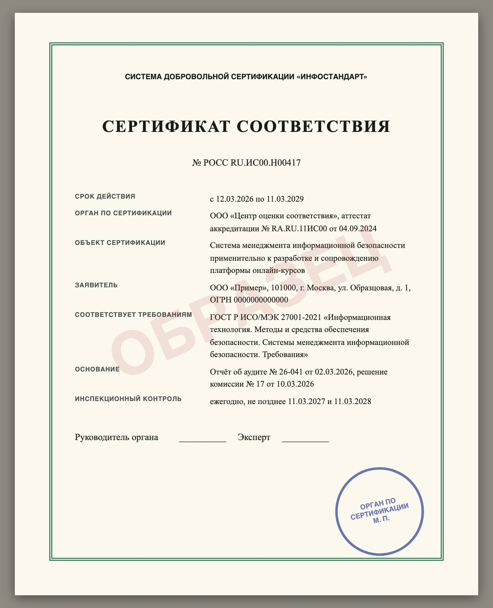
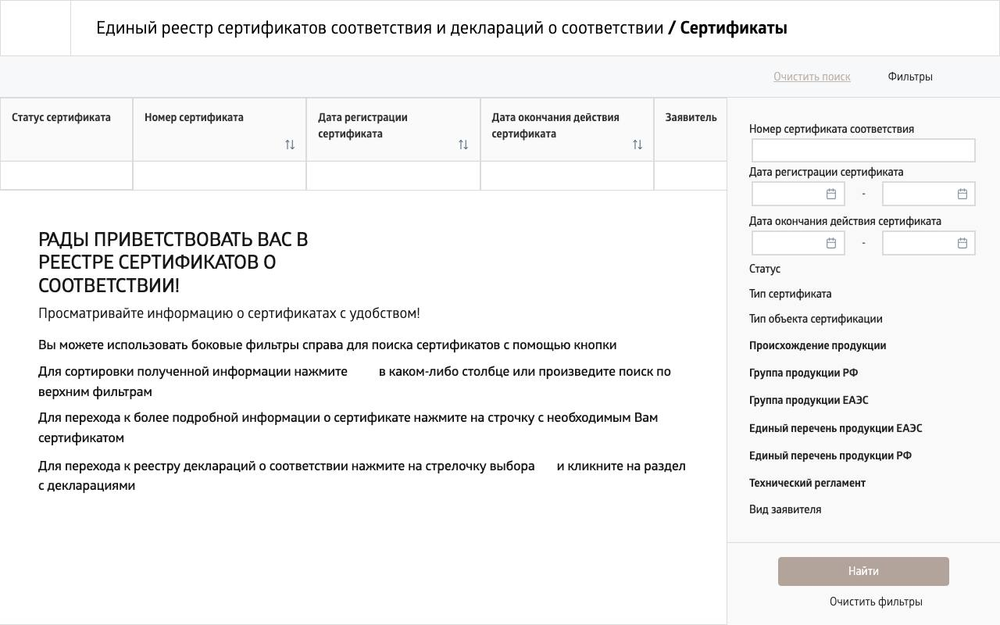
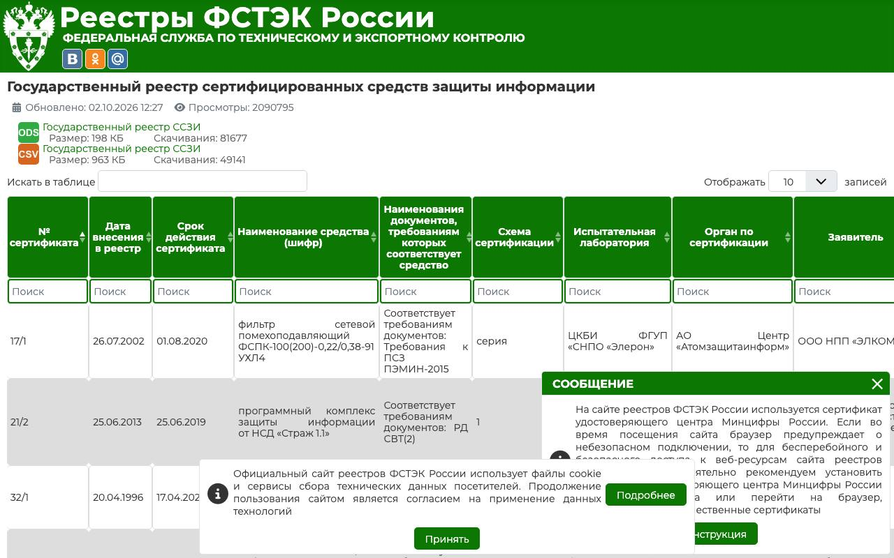

Справочник «Стандарты и сертификаты» · тема 3
Глава 17
Сертификация
и декларирование
Соответствие продукта или организации требованиям подтверждают документом: сертификатом или декларацией. В главе разобраны формы подтверждения соответствия, участники сертификации, состав сертификата и проверка документа по государственным реестрам.
- Документы
- 184-ФЗ ст. 20, 21, 23–25 · 162-ФЗ · 412-ФЗ об аккредитации
- Уровень
- Базовый
- Где встречается
- Закупки, требования заказчиков, средства защиты информации
- Зачем это знать
- Чтобы отличить сертификат от декларации и проверить подлинность документа
§1Формы подтверждения соответствия
Подтверждение соответствия — документальное удостоверение того, что продукция, процесс или услуга отвечают требованиям. Закон 184-ФЗ «О техническом регулировании» делит его на добровольное и обязательное.
- По инициативе заявителя
- На соответствие стандарту или условиям договора
- Пример: сертификат по ГОСТ Р ИСО/МЭК 27001
- Декларацию принимает сам заявитель
- Основание — собственные доказательства или протоколы лаборатории
- Регистрируется в едином реестре
- Сертификат выдаёт орган по сертификации
- Только для продукции из перечней и технических регламентов
- Пример: средства защиты информации
Для обычной программы обязательной сертификации нет. Она появляется, когда программа относится к средствам защиты информации или поставляется для государственных систем.
§2Сертификат и декларация
| Сертификат соответствия | Декларация о соответствии | |
|---|---|---|
| Кто оформляет | орган по сертификации | сам изготовитель или продавец |
| Кто отвечает за достоверность | орган по сертификации и заявитель | заявитель |
| На чём основан | испытания и проверка, которые проводит третья сторона | собственные доказательства, при необходимости — протоколы лаборатории |
| Где проверить | единый реестр Росаккредитации | единый реестр Росаккредитации |
§3Участники
| Участник | Что делает |
|---|---|
| Росстандарт | утверждает национальные стандарты |
| Росаккредитация | аккредитует органы по сертификации и лаборатории, ведёт реестры сертификатов и деклараций |
| Орган по сертификации | проверяет заявителя и выдаёт сертификат |
| Испытательная лаборатория | проводит испытания и оформляет протоколы |
| ФСТЭК России | сертифицирует средства защиты информации, ведёт их государственный реестр |
| ФСБ России | сертифицирует средства шифрования и электронной подписи |
Запись программы в реестре российского программного обеспечения Минцифры сертификатом не является: она подтверждает происхождение программы. Соответствие требованиям она не удостоверяет.
§4Что написано в сертификате

| Сведение | Зачем на него смотреть |
|---|---|
| номер и срок действия | истёкший сертификат ничего не подтверждает |
| орган по сертификации и номер аттестата аккредитации | по номеру проверяют, что орган аккредитован |
| объект сертификации | система менеджмента организации или конкретная продукция |
| область применения | к какой деятельности относится сертификат |
| стандарт с годом | на соответствие чему выдан документ |
| инспекционный контроль | без ежегодной проверки действие сертификата прекращают |
Сертификат системы менеджмента относится к организации. Он не подтверждает качество или безопасность отдельной программы этой организации.
§5Как проверить документ
Сертификаты и декларации, выданные в национальной системе аккредитации, проверяют в едином реестре на сайте Росаккредитации: по номеру видно статус документа, заявителя и срок действия.


Продукцию, которая прошла подтверждение соответствия техническим регламентам Евразийского экономического союза, маркируют знаком EAC. Знак CE относится к требованиям Европейского союза.
§6Частые ошибки
§7Проверьте себя
- Какие формы подтверждения соответствия называет закон 184-ФЗ?
- Чем декларация о соответствии отличается от сертификата?
- Что делает Росаккредитация и чем её роль отличается от роли Росстандарта?
- Какие сведения в сертификате нужно проверить в первую очередь?
- Где проверяют сертификат на средство защиты информации?
добровольная сертификациядекларированиеобязательная сертификация184-ФЗ ст. 20Росстандарт — стандартыРосаккредитация — аккредитация, реестрыФСТЭК — средства защитыФСБ — шифрованиеномер и срокаттестат органаобласть примененияреестр РосаккредитацииEAC — ЕАЭССправочник «Стандарты и сертификаты» · глава 17Макаров Максим Николаевич